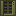

Big facilities make more than coin: spare power and waste heat. Two cube multiblocks (2x2x2 to 5x5x5, or 10x10x10 with research, like the nuclear machines) turn those into something useful. The Grid-Tie Substation sells spare solar, wind and reactor power for RackCoin, cheap at midday and dear in the evening peak; it never touches batteries, diesel or the utility feed. The Heat Recovery Plant is a heat sink that sells your coolant loop's heat to nearby villages as district heating, 50 kW per villager, so the bigger the village the more it takes and pays.

Grid-Tie Substation
rackcraft:grid_substation
Sells your spare power to the outside grid for RackCoin. A multiblock: build a solid cube of 2x2x2 up to 5x5x5 (or 10x10x10 with research) on your power network. Each core exports up to 1 MW, but only what solar panels, wind turbines and reactors have left over once everything else is powered and the batteries are charged: it never drains a battery, runs a diesel or resells the utility feed. It pays 0.05 RC per kJ at night, 60% of that at midday when every solar farm is selling, and two and a half times as much in the evening peak. Exported reactor power still burns fuel.
Crafting
Lightning rod
Lightning rod
Copper block
Redstone block
Copper block
Heat Recovery Plant
rackcraft:heat_recovery_plant
District heating: a heat sink on your coolant loop that sells the heat to the villages around it. A multiblock: build a solid cube of 2x2x2 up to 5x5x5 (or 10x10x10 with research) and pipe it into a loop. Every villager within 64 blocks takes 50 kW (half again in cold biomes, less in hot ones), up to 400 kW per core, and pays 0.4 RC per kJ for it. It needs no power and no water, just customers, so a well-stocked village next door is worth more than you'd think.